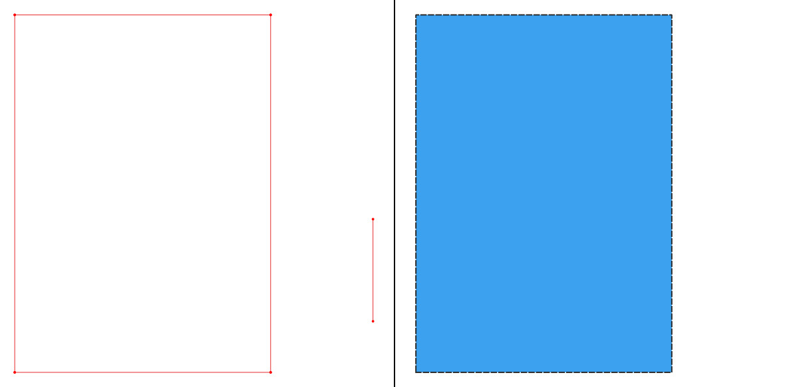
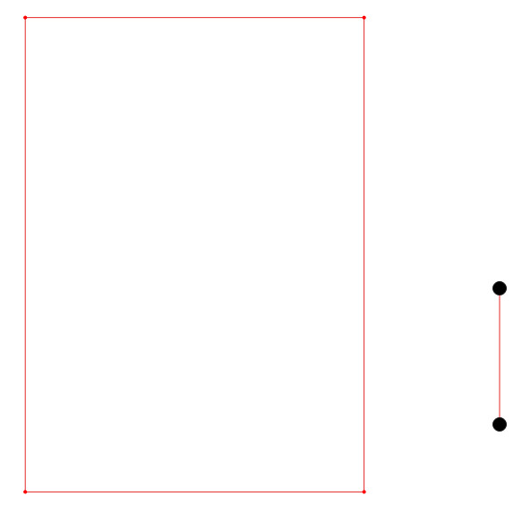

Basic PostGIS Drawing Schema

Background
This is a project from a year or two ago when I wanted to make a floor-plan of the flat I was living in at the time. As this was just a personal project I wanted a free/open solution, my first port of call was a open-source CAD programs. After some investigation I didn't find anything that really fitted what I wanted satisfactorily.
Every option either didn't have the sophistication of digitisation tools that I was after or had some weird compromise in it's file format. From my point of view - the prime advantage of a CAD program is a suite of tools to get designs accurately and efficiently into the digital space and display them in a useful way so I wasn't that keen to learn a program that didn't satisfy those criteria.
As I already know QGIS to a reasonable level, and was busy learning about PostGIS at the time I was predisposed to use them to solve my problem. I could use QGIS as a front-end to digitise everything, and use PostGIS to hold the data and open up a range of features for post-processing of all the data as I went.
Introduction
The overall data structure I was aiming for was to have the majority of elements to be digitised as simple linestrings as I recorded them (e.g. each measured section as a single line). About halfway through I also started recoding the actual measurements that each line had in real life - allowing me to make the drawing 'look' right by joining up as they do in reality where minor inaccuracies in the measurements accumulated to make walls not quite work.
This feature got used most often where lines weren't actually straight or corners weren't as precise as the round figures I digitised with. Obviously this doesn't 'fix' inaccurate measurements or compensate for sloppy measurements (which I was certainly guilty of in some areas). The aim is to allow the complexities of real life to be simplified while still having some idea where the simplification was put in.
If end-point snapping is used properly in QGIS, it should be fairly simple to dynamically join them together in the back-end and create polygons. I've not given any thought to fixing errors automatically (joining lines that are very close together) - but as the underlying data isn't modified, there's no real risk of screwing up anything permanently (also has the option to have snapped/unsnapped views).
Code
Storing the Data
To quickly run through the SQL I used to create / hold the data. First the structure to put the data in:
CREATE SCHEMA drawing_data;
CREATE TABLE drawing_data.label_position (
label_position TEXT PRIMARY KEY
);
INSERT INTO drawing_data.label_position
(label_position)
VALUES
('above')
, ('on')
, ('below');
CREATE TABLE drawing_data.line_in (
oid SERIAL
PRIMARY KEY
, drawing_name VARCHAR
NOT NULL
, item_category VARCHAR
NOT NULL
, item_name VARCHAR
, measured_length FLOAT
, to_label BOOLEAN
DEFAULT FALSE
, label_position VARCHAR
REFERENCES drawing_data.label_position
, label_offset FLOAT
, the_geom GEOMETRY(LINESTRING, 27700)
NOT NULL
);
Which gives me all the information I need to be going on with. There might be an argument to streamline the set of fields used, but this'll do for now.
Joining up the Lines
Merging the individual segments into a series of polygons is a fairly straightforward 2 step process:
- Join up the lines into a single linestring where the ends meet.
- Convert any of the new lines that are closed into a polygon.
Both of these steps are handled by this SQL:
CREATE OR REPLACE VIEW drawing_data.joined_line AS SELECT
MIN(line_in.oid) AS oid
, line_in.drawing_name
, line_in.item_category
, line_in.item_name
, ST_Dump(
ST_LineMerge(
ST_Union(line_in.the_geom)
)
) AS the_geom
FROM drawing_data.line_in
GROUP BY
, line_in.drawing_name
, line_in.item_category
, line_in.item_name;
CREATE OR REPLACE VIEW drawing_data.merged_polygon AS SELECT
row_number() OVER () AS pid
, oid
, x.drawing_name
, x.item_category
, x.item_name
, ST_MakePolygon((x.the_geom).geom) AS geom
FROM joined_line AS x
WHERE
ST_IsClosed((x.the_geom).geom)
ORDER BY
ST_Area(ST_MakePolygon((x.the_geom).geom)) DESC;
The joined_line view merges all the lines based on their drawing_name, item_category and item_name, creates a single line where they join up and then breaks the separate elements of this geometry into separate records (so all of the objects of the same type are briefly a single multiline in here before being split off. After this, the merged_polygon view makes a polygon out of any closed rings, ordered so that larder polygons are rendered first (and won't cover smaller ones).
A simple example of this is shown below - with a series of 4 lines being merged together into a rectangle while ignoring a standalone linestring with the same underlying data because it's not linked.

Admittedly a lot of the actual work here is being done by ST_LineMerge, but I'm happy with the added level of versatility over just the raw function.
Identifying Errors
Working with this setup for a while worked pretty well, but did result in a few frustrating moments when trying to identify the breaks where one part of a long set of lines didn't quite connect up. To fix that I can just modify the polygon-generating view slightly:
CREATE OR REPLACE VIEW drawing_data.broken_line AS SELECT
row_number() OVER () AS pid
, x.drawing_name
, x.item_category
, x.item_name
, ST_Boundary((x.the_geom).geom) AS the_geom
FROM drawing_data.joined_line AS x
WHERE
NOT ST_IsClosed((x.the_geom).geom);
Here, the inner query is the same, but rather than running any rings through ST_MakePolygon, I'm putting the non-ring outputs through ST_Boundary. As the boundary of a line is its end-points this creates a point geometry at the breaks in rings, letting them be easily knitted together.
The result of this being something like this (with broken ends being the large black dots):

With points correctly identifying that a two-point line isn't a closed loop - marvellous.
Getting an Idea of Accuracy
Earlier, I said that I was recording the actual distances measured in addition to the line drawn. This was partially a concession to my budget tools and lack of experience with this kind of work but also I believe it's important to know where errors exist if it's practical to do so. Ideally all the lines would be the exact size measured, but I need to have all my lines joining perfectly to generate polygons and a few cursory measurements show that my walls aren't exactly perpendicular to each other.
This view calculates a few relevant statistics about the difference between measured and digitised lengths:
CREATE OR REPLACE VIEW drawing_data.line_diffs AS SELECT
line_in.oid
, line_in.drawing_name
, line_in.item_category
, line_in.measured_length
, ROUND(ST_Length(line_in.the_geom)::numeric, 3) AS line_length
, ROUND((ST_Length(line_in.the_geom) - line_in.measured_length)::numeric, 3) AS abs_diff
, ROUND(((ST_Length(line_in.the_geom) - line_in.measured_length
) / line_in.measured_length * 100::double precision
)::numeric,
2
) AS perc_diff
, line_in.the_geom
FROM
drawing_data.line_in
WHERE
line_in.measured_length IS NOT NULL AND
ABS((ST_Length(line_in.the_geom) - line_in.measured_length)) >= 0.001::double precision
ORDER BY
ROUND(((ST_Length(line_in.the_geom) - line_in.measured_length
) / line_in.measured_length * 100::double precision
)::numeric,
2
) DESC;
I've opted for a diverging colour scheme here to differentiate lines that are larger or smaller than their measurements. As they also increase in saturation out from 0% difference, that also makes finding absolute accuracy pretty easy too.

And from this it's pretty obvious that the worst inaccuracies are for multi-part measurements (e.g. from my front door to the bathroom doorframe). That makes a lot of sense as the handover spot isn't fixed. Most of the longest measurements are pretty good with the top half of the flat being a little over and the lower half being under.
Future Improvements
As always there's still a lot of room for improvements. The most obvious being that I am kinda implementing a very basic version of topology extension for PostGIS. It would probably be worth seeing if its possible to get any mileage out of that before going much further.
A few other improvements might be:
- An extra layer of snapping lines that might be polygons together might be useful, but would require a lot of testing to work out a reasonable snapping thresold.
- If this was in a production environment I'd probably tie down most of the input fields with foreign keys onto reference tables.
- Also recording the instrument the recoding was made with (tape/laser) could highlight systematic problems.
- One interesting possibility would be to use the additional measurements to automatically reconstruct the recorded geometries to better match the measurements as a whole (similar to how polygons are resized in cartograms).